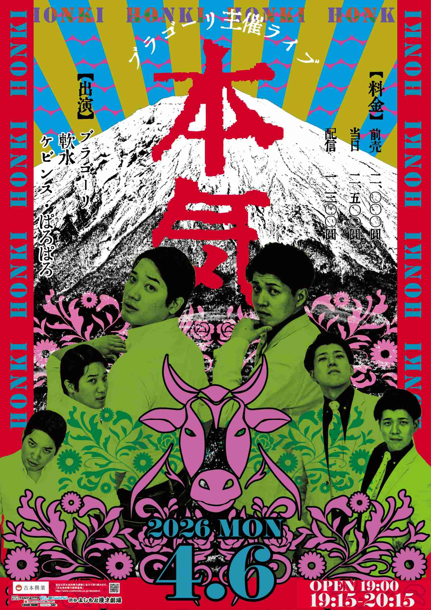

今後の公演（75件）
渋谷よしもと漫才劇場 1周年記念プレミアムネタフェスティバル〜第三部〜
日時2026/4/4(土) 開場 15:55 | 開演 16:10 | 終演 18:00
会場渋谷よしもと漫才劇場
出演者[ネタライブ]おしみんまる／アイロンヘッド／官兵衛／蛙亭／からし蓮根／ケビンス／田津原理音／ぱろぱろ／黄昏の森／赤嶺総理／11月のリサ／おふろ／オフローズ／ド桜／ナイチンゲールダンス／金魚番長／喫茶ムーン／小虎／はるかぜとともに／今夜はブルース／テキセツの街／寿司東京[ コーナー出演者]前半 MC：アイロンヘッド／おしみんまる／蛙亭／からし蓮根／田津原理音／11月のリサ／ド桜／ナイチンゲールダンス／喫茶ムーン／はるかぜとともに／寿司東京[ コーナー出演者]後半 MC：ケビンス／官兵衛／ぱろぱろ／黄昏の森／赤嶺総理／おふろ／オフローズ／金魚番長／小虎／今夜はブルース／テキセツの街
渋谷よしもと漫才劇場 1周年記念プレミアムネタフェスティバル
日時2026/4/4(土) 開演 16:10
会場渋谷よしもと漫才劇場
出演者[ネタライブ]おしみんまる／アイロンヘッド／官兵衛／蛙亭／からし蓮根／ケビンス／田津原理音／ぱろぱろ／黄昏の森／赤嶺総理／11月のリサ／おふろ／オフローズ／ド桜／ナイチンゲールダンス／金魚番長／喫茶ムーン／小虎／はるかぜとともに／今夜はブルース／テキセツの街／寿司東京
[ コーナー出演者]前半 MC：アイロンヘッド／おしみんまる／蛙亭／からし蓮根／田津原理音／11月のリサ／ド桜／ナイチンゲールダンス／喫茶ムーン／はるかぜとともに／寿司東京
[ コーナー出演者]後半 MC：ケビンス／官兵衛／ぱろぱろ／黄昏の森／赤嶺総理／おふろ／オフローズ／金魚番長／小虎／今夜はブルース／テキセツの街
渋谷よしもと漫才劇場 1周年記念プレミアムネタフェスティバル
日時2026/4/5(日) 開演 16:10
会場渋谷よしもと漫才劇場
出演者[ネタライブ]大谷健太／デンゼル／光永／いぬ／シカゴ実業／スロッピ／鶴亀／ゆにばーす／さや香／ワラバランス／九条ジョー／カベポスター／ミカボ／シンクロニシティ／バリカタ友情飯／ゼロカラン／青いデルタ／私東京／き展／ド天国／照山おうちごはん
[ コーナー出演者]考案 MC：ゆにばーす／光永／いぬ／ワラバランス／九条ジョー／ミカボ／シンクロニシティ／ゼロカラン／私東京／ド天国／照山おうちごはん
[ コーナー出演者]後半 MC：シカゴ実業／大谷健太／デンゼル／スロッピ／鶴亀／さや香／カベポスター／バリカタ友情飯／青いデルタ／き展
渋谷よしもと漫才劇場 1周年記念プレミアムネタフェスティバル〜第六部〜
日時2026/4/5(日) 開場 15:55 | 開演 16:10 | 終演 18:00
会場渋谷よしもと漫才劇場
出演者[ネタライブ]大谷健太／デンゼル／光永／いぬ／シカゴ実業／スロッピ／鶴亀／ゆにばーす／さや香／ワラバランス／九条ジョー／カベポスター／ミカボ／シンクロニシティ／バリカタ友情飯／ゼロカラン／青いデルタ／私東京／き展／ド天国／照山おうちごはん[ コーナー出演者]考案 MC：ゆにばーす／光永／いぬ／ワラバランス／九条ジョー／ミカボ／シンクロニシティ／ゼロカラン／私東京／ド天国／照山おうちごはん[ コーナー出演者]後半 MC：シカゴ実業／大谷健太／デンゼル／スロッピ／鶴亀／さや香／カベポスター／バリカタ友情飯／青いデルタ／き展
ブラゴーリ主催ライブ「本気」
日時2026/4/6(月) 開演 19:15
会場渋谷よしもと漫才劇場
出演者[企画ライブ]ブラゴーリ／軟水／ケビンス／ぱろぱろ

漫才師によるコントライブB面
日時2026/4/6(月) 開場 21:15 | 開演 21:30 | 終演 22:30
会場YOSHIMOTO ROPPONGI THEATER
出演者マリーマリー／キンボシ／ケビンス／ド桜／兄弟／ボブのコーラ
「人類みなピン類」
日時2026/4/7(火) 開演 19:30
会場神保町よしもと漫才劇場
出演者[企画ライブ]ケビンス 山口コンボイ／今井らいぱち／ワラバランス 盛田シンプルイズベスト／九条ジョー／からし蓮根 伊織ラッキー／田津原理音／素敵じゃないか 吉野晋右／ソマオ・ミートボール／きっと君はくるさ カルビ／けいごステファニー
漫才漫ション9兆1千5号室
素敵じゃないかの漫才グランドチャンピオン
日時2026/4/11(土) 開演 16:30
会場大宮ラクーンよしもと劇場
出演者素敵じゃないか／ソマオ・ミートボール／ザ・パンチ／トット／シシガシラ／シカゴ実業／ケビンス／めぞん
ねたログ
お笑いライブ ドンガラガッシャン
日時2026/4/11(土) 開演 19:00
会場よしもと道頓堀シアター
出演者ダブルアート／豪快キャプテン／ドーナツ・ピーナツ／ぎょうぶ／ぐろう／[ゲスト] マユリカ／cacao
劇団前野の500円ミュージカル ～小さい、人魚姫のん～１
日時2026/4/12(日) 開演 18:30
会場ルミネtheよしもと
出演者クロスバー直撃 前野／守谷日和／動物チーム／mossan／アイロンヘッド／ザ・プラン9 爆ノ介／ロングコートダディ／大自然／ビスケットブラザーズ／清友／ゲスト：マユリカ
神回サミット
日時2026/4/12(日) 開演 19:00
会場渋谷よしもと漫才劇場
出演者[企画ライブ]ケビンス 仁木／他
ごきげん会？ポポポポーン？
日時2026/4/14(火) 開演 19:15
会場渋谷よしもと漫才劇場
出演者[企画ライブ]シンクロニシティ／軟水／うただ／ぎょうぶ／コーナーMC：コウミ
四分漫才結社
謎笑王～ひらめきとお笑いのダブルスタンバイ～
日時2026/4/15(水) 開演 19:15
会場渋谷よしもと漫才劇場
出演者[企画ライブ]ランパンプス／カゲヤマ／ダンビラムーチョ 大原優一／ケビンス／ミカボ／大王
双龍砲
日時2026/4/16(木) 開演 19:30
会場阿佐ヶ谷ロフトA（東京都）
出演者野澤輸出、マユリカ中谷
カラタチ前田がせっかくピンネタ作ったのでピン芸人の先輩のネタを見せてもらって、
日時2026/4/18(土) 開演 14:00
会場表現ライブハウス 池袋西口GEKIBA（東京都）
出演者カラタチ前田、小森園ひろし、九条ジョー、シンクロニシティ西野
グランドバトルEAST
日時2026/4/18(土) 開演 18:00
会場渋谷よしもと漫才劇場
出演者[ランキングバトルライブ]小森園ひろし／いぬ／スロッピ／TEAM近藤／まんじろう／からし蓮根／スクラップス／ダブルヒガシ／ドンデコルテ／ぶったま／アズーロ24／シンクロニシティ／太鵬／軟水／世界クジラ／三戸キャップ／ビューティフルトーキョーマンズ／MC：バイク川崎バイク
グランドバトルEAST 第二部
日時2026/4/18(土) 開場 17:45 | 開演 18:00 | 終演 19:45
会場渋谷よしもと漫才劇場
出演者[ランキングバトルライブ]小森園ひろし／いぬ／スロッピ／TEAM近藤／まんじろう／からし蓮根／スクラップス／ダブルヒガシ／ドンデコルテ／ぶったま／アズーロ24／シンクロニシティ／太鵬／軟水／世界クジラ／三戸キャップ／ビューティフルトーキョーマンズ／MC：バイク川崎バイク
Pi●ク大喜利夜会 配信イッたら即終了LIVE
日時2026/4/18(土) 開演 19:00
会場LEFKADA新宿（東京都）
出演者はら（ゆにばーす）、大谷健太、野澤輸出、オダウエダ、ルシファー吉岡（マセキ芸能社）、紺野ぶるま（松竹芸能）、他
MC：ケビンス仁木恭平
グランドバトルEAST
日時2026/4/19(日) 開演 15:15
会場渋谷よしもと漫才劇場
出演者[ランキングバトルライブ]イチキップリン／アイロンヘッド／カーネーション／クロフネ／鶴亀／やさしいズ／滝音／まちるだ／九条ジョー／ケビンス／ぱろぱろ／赤嶺総理／11月のリサ／アメリカンBBチキン／生ファラオ／バリカタ友情飯／ZAZY／MC：キクチウソツカナイ。
グランドバトルEAST 第四部
日時2026/4/19(日) 開場 15:00 | 開演 15:15 | 終演 17:00
会場渋谷よしもと漫才劇場
出演者[ランキングバトルライブ]イチキップリン／アイロンヘッド／カーネーション／クロフネ／鶴亀／やさしいズ／滝音／まちるだ／九条ジョー／ケビンス／ぱろぱろ／赤嶺総理／11月のリサ／アメリカンBBチキン／生ファラオ／バリカタ友情飯／ZAZY／MC：キクチウソツカナイ。
シンクロニシティ60分コントライブ「＝」

幕張春の新生活応援ライブ～ドキドキワクワクなネタ＆コーナー～
日時2026/4/23(木) 開演 12:00
会場よしもと幕張イオンモール劇場
出演者トット／ツートライブ／ロングコートダディ／ケビンス／9番街レトロ
まくはり春のボケ祭り
日時2026/4/23(木) 開演 18:00
会場よしもと幕張イオンモール劇場
出演者ケビンス／そいつどいつ／9番街レトロ／ソマオ・ミートボール／イチゴ

ド桜のコーナーライブ「桜会」
日時2026/4/24(金) 開演 19:15
会場渋谷よしもと漫才劇場
出演者[企画ライブ]ド桜／からし蓮根／ケビンス 山口／シモリュウ シモタ／そいつどいつ／田津原理音／ぱろぱろ／ラニーノーズ／紅しょうが 熊元／MC：ミカボ
ワラケン体験クラブ「ソマオ・ミートボールのギャグ作り体験教室」
日時2026/4/25(土) 開演 16:00
会場ワラケンスタジオ（東京都）
出演者ソマオ・ミートボール
ゲスト：シンクロニシティ西野
漫開
日時2026/4/25(土) 開演 19:00
会場新宿シアターモリエール（東京都）
出演者ドーナツ・ピーナツ、ミカボ
ゲスト：シンクロニシティ、愛凛冴、ひつじねいり(マセキ芸能社)
中野なかるてぃんのイントロクイズネオ
日時2026/4/25(土) 開演 19:00
会場渋谷よしもと漫才劇場
出演者[企画ライブ]ナイチンゲールダンス／ケビンス／9番街レトロ／サンタモニカ／しんや
スマイルキング
日時2026/4/26(日) 開演 19:00
会場渋谷よしもと漫才劇場
出演者[企画ライブ]エバース／シンクロニシティ／軟水／インテイク／イチゴ／ゼロカラン
気になる大喜利～この人たちの大喜利どんな感じ？～
日時2026/4/26(日) 開演 20:45
会場ルミネtheよしもと
出演者ゆにばーす 川瀬名人／ドンデコルテ 小橋／バッテリィズ 寺家／令和ロマン 松井ケムリ／シンクロニシティ 西野／MC：ヒューマン中村／他
俺たち！大喜利部
日時2026/4/27(月) 開演 19:00
会場渋谷よしもと漫才劇場
出演者[企画ライブ]シカゴ実業 山本／カゲヤマ 益田／ケビンス 仁木／シモリュウ 前田／野澤輸出／他
やさしいズタイの「庭」
Kiwami極LIVE
日時2026/4/28(火) 開演 17:00
会場よしもと漫才劇場
出演者ゲスト:マユリカ／バッテリィズ／
祇園／アイラブ地球／武者武者／盆と正月／うただ／タレンチ／ときヲりぴーと／銀鬼／濱田祐太郎／まんじろう
ネルソンズとケビンスが若手芸人と仲良くなるためのライブ
日時2026/4/28(火) 開演 18:30
会場赤坂RED/THEATER（東京都）
出演者ネルソンズ、ケビンス、他
囲碁将棋のオマエらには負けねえから！～後輩漫才師たちとガチネタバトル～
日時2026/4/28(火) 開演 19:30
会場ルミネtheよしもと
出演者ＭＣ：POISON GIRL BAND 吉田大吾／囲碁将棋／シシガシラ／カーネーション／ダイタク／ダンビラムーチョ／滝音／ミカボ／アメリカンBBチキン／エバース／ド桜／シンクロニシティ／ヨネダ2000／インテイク／ボブのコーラ

マユリカのうなげろりん！！presents日本の大学いきましょか
日時2026/5/1(金) 開演 19:00
会場LINE CUBE SHIBUYA（東京都）
出演者マユリカ
男女コンビによるコントパーティー！
日時2026/5/2(土) 開場 17:00 | 開演 17:15 | 終演 18:15
会場YOSHIMOTO ROPPONGI THEATER
出演者蛙亭／シンクロニシティ／エレガント人生／世間知らズ
シンクロニシティ×兄弟ツーマンライブ「チョコレート・エアポート」
日時2026/5/3(日) 開場 18:45 | 開演 19:00 | 終演 20:00
会場神保町よしもと漫才劇場
出演者[企画ライブ]シンクロニシティ／兄弟
渋谷よしもと漫才劇場 ゴールデンウィーク特別寄席
日時2026/5/5(火) 開演 11:00
会場渋谷よしもと漫才劇場
出演者[ネタライブ]ダンビラムーチョ／ドンデコルテ／マルセイユ／今井らいぱち／やさしいズ／ぱろぱろ／シンクロニシティ／照山おうちごはん／ゲスト：ニューヨーク／他
渋谷よしもと漫才劇場 ゴールデンウィーク特別寄席
日時2026/5/5(火) 開演 12:45
会場渋谷よしもと漫才劇場
出演者[ネタライブ]ダンビラムーチョ／ドンデコルテ／マルセイユ／今井らいぱち／やさしいズ／ぱろぱろ／シンクロニシティ／照山おうちごはん／ゲスト：ニューヨーク／他
アメトーーク！初アリーナLIVE来ないなんてありえなーーい2026
日時2026/5/5(火) 開演 16:00
会場TOYOTA ARENA TOKYO（東京都）
出演者蛍原徹
アンタッチャブル山崎、FUJIWARA藤本、三四郎・小宮、すゑひろがりず三島、ザ・マミィ酒井、紅しょうが、マユリカ、蛙亭イワクラ、コロコロチキチキペッパーズ、空気階段・水川かたまり、コットンきょん、レインボー池田、ジェラードンかみちぃ ほか
ケビンス×ママタルト×パンプキンポテトフライ「ハイカロリー２」
日時2026/5/5(火) 開演 16:00
会場せたがやイーグレットホール(世田谷区民会館)（東京都）
出演者ケビンス、ママタルト（サンミュージック）、パンプキンポテトフライ（ホリプロコム）
ド桜のネタ咲き
日時2026/5/5(火) 開場 20:00 | 開演 20:15 | 終演 21:15
会場神保町よしもと漫才劇場
出演者[企画ライブ]ド桜／ダブルヒガシ／シンクロニシティ／兄弟
素敵じゃないかの漫才グランドチャンピオン
日時2026/5/6(水) 開演 16:30
会場大宮ラクーンよしもと劇場
出演者素敵じゃないか／ソマオ・ミートボール／トット／すゑひろがりず／シシガシラ／ちょんまげラーメン／めぞん／シンクロニシティ
ベビンス
日時2026/5/6(水) 開場 20:15 | 開演 20:30 | 終演 21:30
会場神保町よしもと漫才劇場
出演者[企画ライブ]ケビンス
はるかぜに告ぐのメガ進化
日時2026/5/8(金) 開演 19:30
会場よしもと漫才劇場
出演者はるかぜに告ぐ／ケビンス／黒帯／九ノ段／MC:アイラブ地球 コウノ・オブ・ザ・イヤー
ごきげん会？ポポポポーン？
日時2026/5/9(土) 開演 18:00
会場よしもと漫才劇場
出演者うただ／ぎょうぶ／軟水／シンクロニシティ
TOKYO SHUCHAN COLLECTION 2026
日時2026/5/10(日) 開演 14:00
会場銀座ブロッサム（中央会館）ホール（東京都）
出演者蛙亭、カラタチ、kento fukaya、ZAZY、マユリカ、やさしいズ タイ、コットン、田津原理音、9番街レトロ、エルフ
ネタ中のどこかでお互いに愛してるって言わないといけないライブ
日時2026/5/10(日) 開場 18:45 | 開演 19:00 | 終演 20:00
会場神保町よしもと漫才劇場
出演者[企画ライブ]九条ジョー／ケビンス／世間知らズ／ド桜／大王
東京グランド花月
日時2026/5/12(火) 開演 15:00
会場IMM THEATER
出演者西川きよし、博多華丸・大吉、ギャロップ、5GAP、サルゴリラ、金属バット、ミキ、マユリカ、他
＜吉本新喜劇＞
座長：アキ
島田珠代、末成映薫、島田一の介、ケン、大塚澪、野崎塁、レイチェル、信濃岳夫、他
東京グランド花月
日時2026/5/12(火) 開演 18:30
会場IMM THEATER
出演者西川きよし、博多華丸・大吉、ギャロップ、5GAP、サルゴリラ、金属バット、ミキ、マユリカ、他
＜吉本新喜劇＞
座長：アキ
島田珠代、末成映薫、島田一の介、ケン、大塚澪、野崎塁、レイチェル、信濃岳夫、他
五反田会～山口コンボイ入会フレンドパーク～
日時2026/5/12(火) 開演 20:30
会場よしもと幕張イオンモール劇場
出演者トット 多田／マルセイユ 津田／シシガシラ 浜中／CITY 小野／【入会志願者】山口コンボイ
くらげ新ネタライブ「浮遊」
日時2026/5/13(水) 開演 19:15
会場渋谷よしもと漫才劇場
出演者[企画ライブ]くらげ／マルセイユ／kento fukaya／滝音／シンクロニシティ／ナイチンゲールダンス／インテイク／他
やさしいズタイpresents「強いカタチ」
日時2026/5/14(木) 開演 21:00
会場渋谷よしもと漫才劇場
出演者[企画ライブ]やさしいズ タイ／今井らいぱち／キンボシ／ダンビラムーチョ／ケビンス／バリカタ友情飯／金魚番長／他
かわいい後輩代表は僕です！～後輩芸人力王決定戦～
日時2026/5/17(日) 開演 14:30
会場大宮ラクーンよしもと劇場
出演者9番街レトロ／シンクロニシティ／兄弟／ナユタ／ビューティフルトーキョーマンズ
野澤輸出のカラオケ大宮便
日時2026/5/17(日) 開演 16:00
会場大宮ラクーンよしもと劇場
出演者野澤輸出／9番街レトロ／ナユタ／ケビンス
四分漫才結社
日時2026/5/20(水) 開場 19:00 | 開演 19:15 | 終演 20:15
会場神保町よしもと漫才劇場
出演者[企画ライブ]セッツァー／カラタチ／くらげ／素敵じゃないか／シンクロニシティ／シシガシラ／オズワルド／MC:阿部直也
野澤輸出脚本演劇「回路」完全版
日時2026/5/22(金) 開演 19:45
会場YOSHIMOTO ROPPONGI THEATER
出演者主演：マユリカ 中谷／野澤輸出／ダンビラムーチョ 大原／レインボー 池田／鶴亀／マリーマリー／カゲヤマ 益田／特別出演：マユリカ 阪本
kento fukayaのゆるいぜ！旅マウス！
日時2026/5/24(日) 開演 14:00
会場東別院テラスホール（愛知県）
出演者kento fukaya
ダンビラムーチョ、今井らいぱち、カベポスター、ケビンス、たくろう
山添展
日時2026/5/24(日) 開演 18:30
会場有楽町よみうりホール（東京都）
出演者山添寛
山﨑ケイ（相席スタート）、山名文和（アキナ）、じろう（シソンヌ）、や団（SMA）、マユリカ、きしたかの（マセキ芸能社）、レインボー、江角怜音・小澤愛実(≒JOY)、にゃんぞぬデシ（シンガーソングライター）
エピソードダウト
日時2026/5/25(月) 開演 19:00
会場よしもと福岡 大和証券劇場
出演者ゲスト：シンクロニシティ／MC：ザ・ローリングモンキー ムサシ／メタルラック 美意識タカシ／太宰 あやむ／かば鴉 イースト亮次郎／喜喜かいばしら／パンたべる パン
1993年5月25日
日時2026/5/25(月) 開演 19:15
会場渋谷よしもと漫才劇場
出演者[企画ライブ]ケビンス 山口コンボイ／田津原理音
漫才漫ション9兆1千5号室
日時2026/5/26(火) 開場 20:45 | 開演 21:00 | 終演 22:00
会場神保町よしもと漫才劇場
出演者[企画ライブ]ミカボ／シンクロニシティ／ゲスト:ミキ
スマイルキング
日時2026/5/27(水) 開演 15:15
会場渋谷よしもと漫才劇場
出演者[ネタライブ]エバース／シンクロニシティ／軟水／インテイク／イチゴ／ゼロカラン
世間知らズの新帝国
日時2026/5/27(水) 開場 20:45 | 開演 21:00 | 終演 22:00
会場神保町よしもと漫才劇場
出演者[企画ライブ]世間知らズ／ケビンス／ヨネダ2000／けいごステファニー
海賊バレエ
日時2026/5/28(木) 開場 21:00 | 開演 21:15 | 終演 22:15
会場神保町よしもと漫才劇場
出演者[企画ライブ]CITY／シンクロニシティ／ド桜
俺たち！大喜利部
日時2026/5/29(金) 開演 21:00
会場渋谷よしもと漫才劇場
出演者[企画ライブ]MC：シモリュウ 前田／シカゴ実業 山本／ケビンス 仁木／野澤輸出／他
GAG新ネタライブ「MENS JACKET COAT NEED HOMES，TOO」
日時2026/5/30(土) 開演 12:00
会場大宮ラクーンよしもと劇場
出演者GAG／囲碁将棋／トット／タモンズ／ジェラードン／シンクロニシティ
（S）スーパー（J）ジョイフルコーナーライブ
日時2026/5/30(土) 開演 14:00
会場大宮ラクーンよしもと劇場
出演者GAG／囲碁将棋／トット／タモンズ／ジェラードン／シンクロニシティ
西野君、今の僕を見てくれないか？～【大宮お笑いタッグマッチ】
日時2026/5/30(土) 開演 16:00
会場大宮ラクーンよしもと劇場
出演者GAG／囲碁将棋／トット／タモンズ／ジェラードン／シンクロニシティ
がっぷり四つ！かみちぃ＆よしおかさんMCのダサ反省会
日時2026/5/30(土) 開演 18:00
会場大宮ラクーンよしもと劇場
出演者GAG／囲碁将棋／トット／タモンズ／ジェラードン／シンクロニシティ
神回サミット
日時2026/5/31(日) 開演 21:00
会場渋谷よしもと漫才劇場
出演者[企画ライブ]ケビンス 仁木／他
kento fukayaのゆるいぜ！旅マウス！
日時2026/6/19(金) 開演 19:00
会場ルミネtheよしもと
出演者kento fukaya／ビスケットブラザーズ／マユリカ／さや香／ダブルヒガシ
過去の公演（3件）
ごきげん会？ポポポポーン？
日時2026/3/31(火) 開演 21:00
会場よしもと漫才劇場
出演者ぎょうぶ／うただ／軟水／シンクロニシティ

野澤輸出の60分「○○みたいに言うな！！」ライブ
日時2026/4/1(水) 開演 18:00
会場よしもと幕張イオンモール劇場
出演者野澤輸出／シカゴ実業 山本プロ野球／ダンビラムーチョ 大原優一／ケビンス 仁木恭平／素敵じゃないか 柏木成彦／9番街レトロ
シンクロニシティ×翠星チークダンスツーマンライブ「シンクロチークダンス」
日時2026/4/3(金) 開場 19:00 | 開演 19:15 | 終演 20:15
会場渋谷よしもと漫才劇場
出演者[企画ライブ]シンクロニシティ／翠星チークダンス